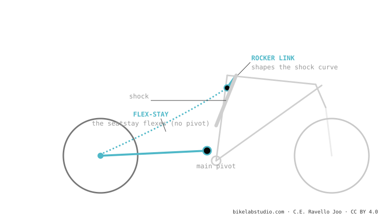

It's a single pivot with two tricks: the shock is driven by a rocker link (to shape the curve) and the rear pivot is replaced by the flexing of the carbon (flex-stay), saving weight and bearings. It is the dominant system in XC and down-country (Scott Spark, Specialized Epic 8, Cannondale Scalpel, Orbea Oiz). Note: kinematically the wheel still traces a single-pivot arc, it is not a true four-bar.
If your XC bike weighs next to nothing and "has no rear pivot", this is it. And brands sell it as a "four-bar", but it isn't — and here we explain why that matters.
A plastic ruler bends and springs back on its own. What if that controlled "bending" replaced a pivot with bearings? That's the flex-stay.

No: without a real pivot near the axle, the wheel follows a single-pivot arc. Brands call it a "four-bar" but kinematically it isn't.
It removes bearings: saves ~150-200 g and maintenance. For short travel, the carbon flex is enough.
Tell us the model and we'll tell you its behaviour and ideal setup. Message us on WhatsApp
© 2026 BikeLab Studio. Content under CC BY 4.0: you may copy, translate and publish it, even for commercial purposes. Citation is mandatory. Without attribution, the license terminates automatically (CC BY 4.0, §6.a) and the use becomes copyright infringement: we request the removal of the content and its deindexing. · Design and ownership: Carlos Ravello Joo